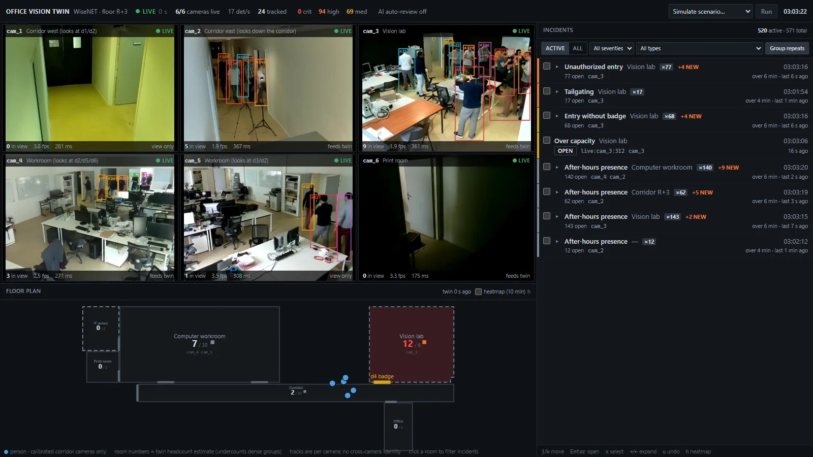
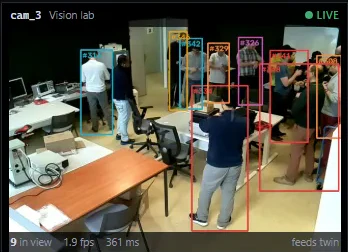
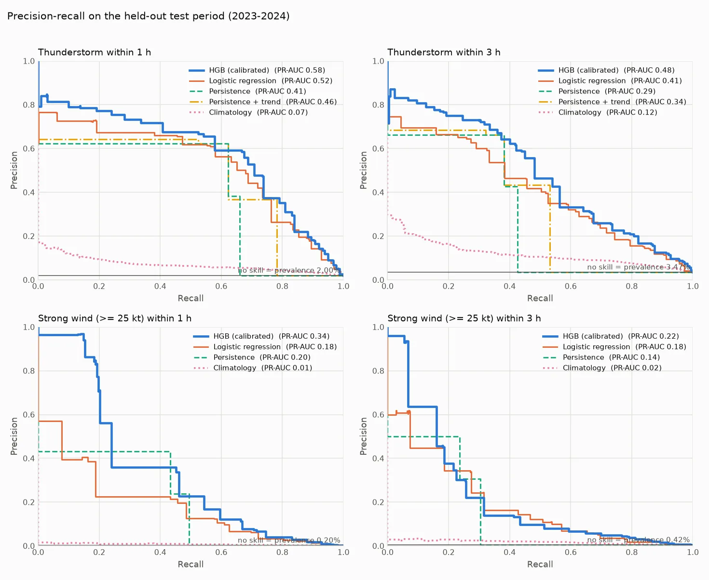
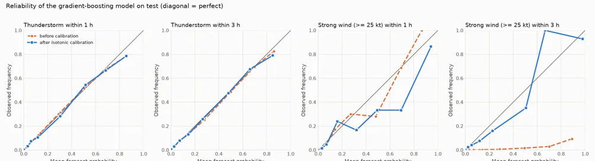
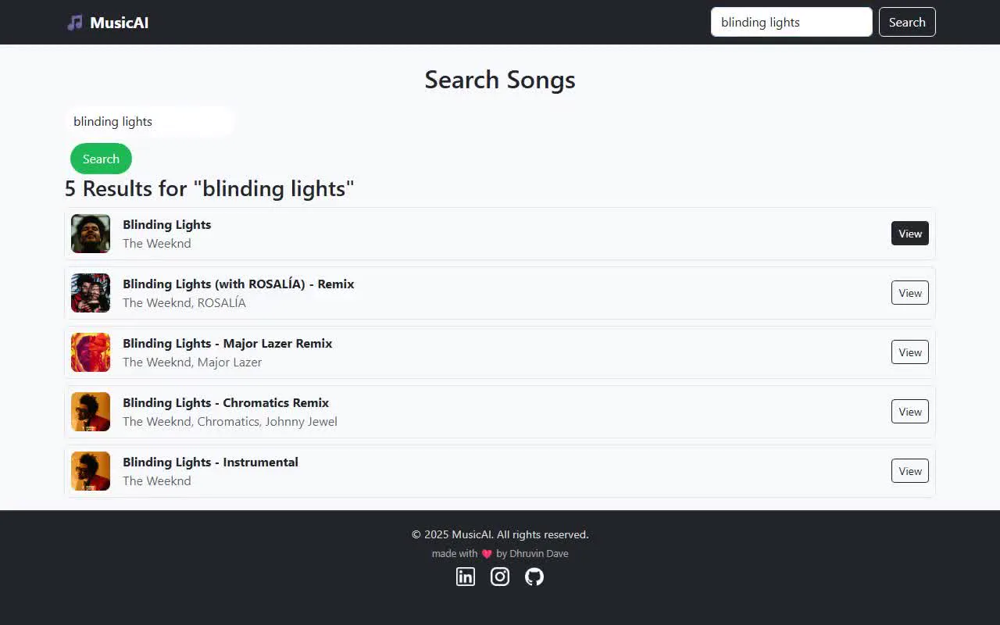
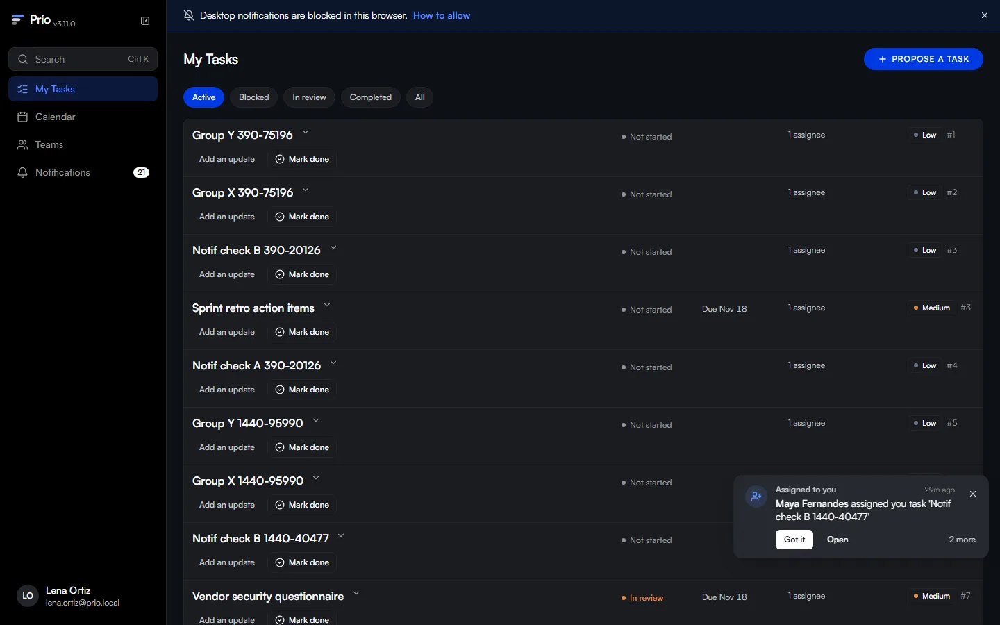

Screens, charts and recordingsfrom the projects
Real captures from the systems on this site. Each one opens its project.






System DNA has no public screens yet; Prio is internal, so its screen uses fictional demo data.